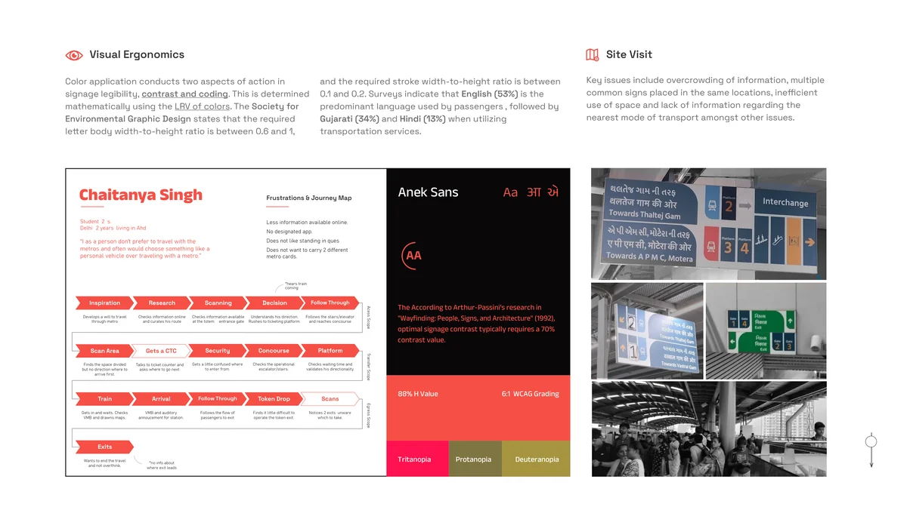
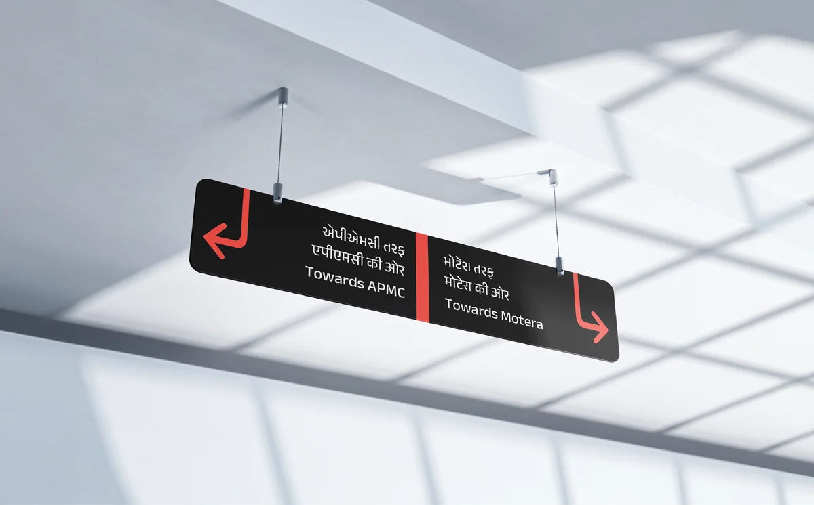
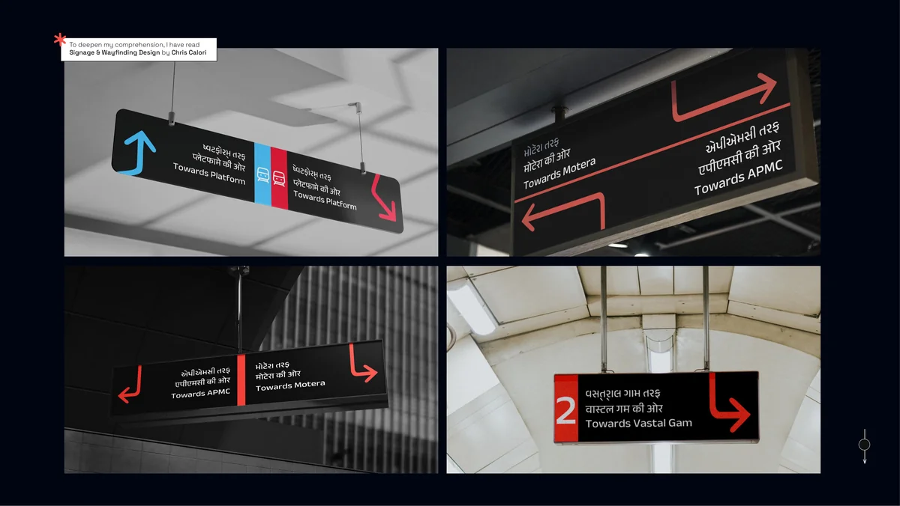
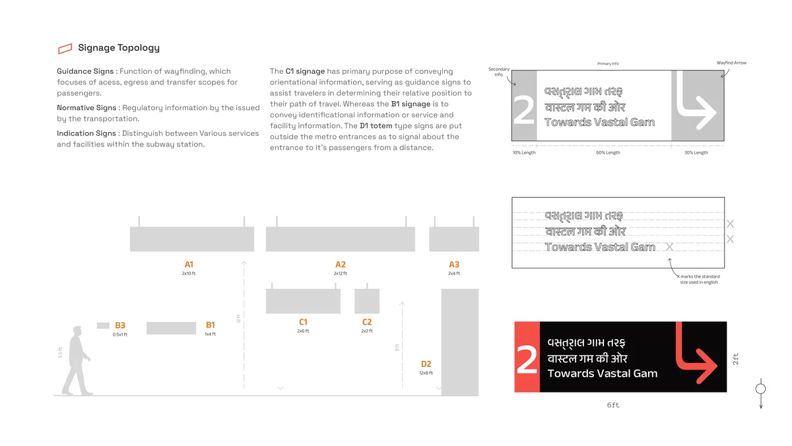
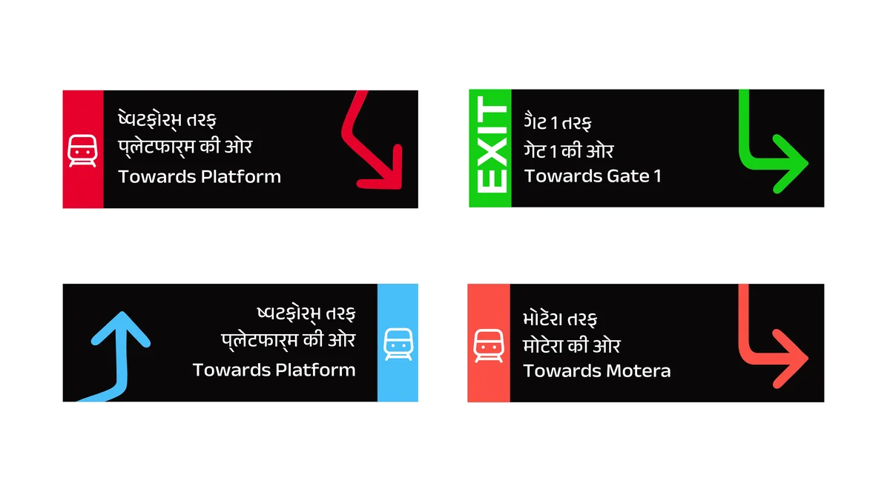
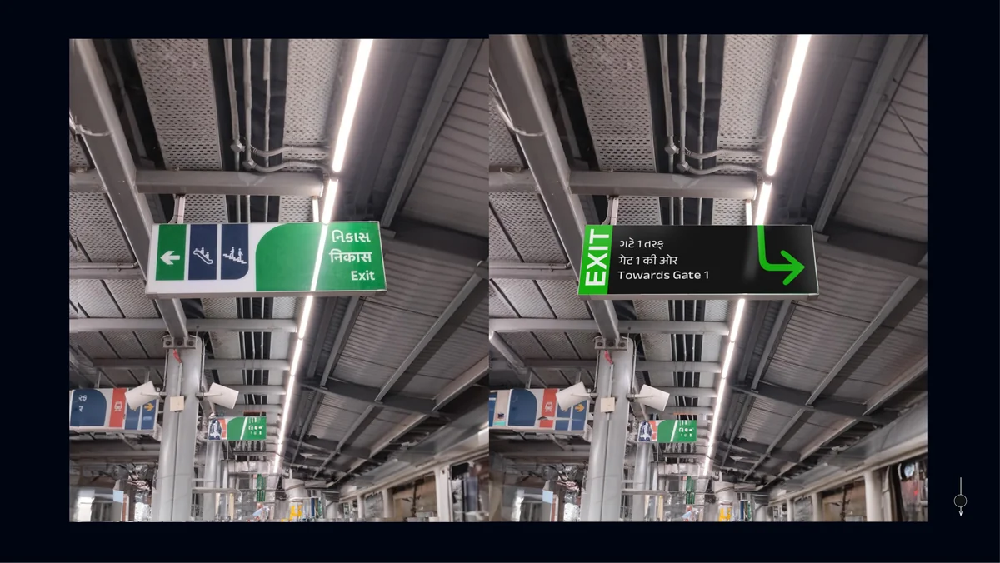
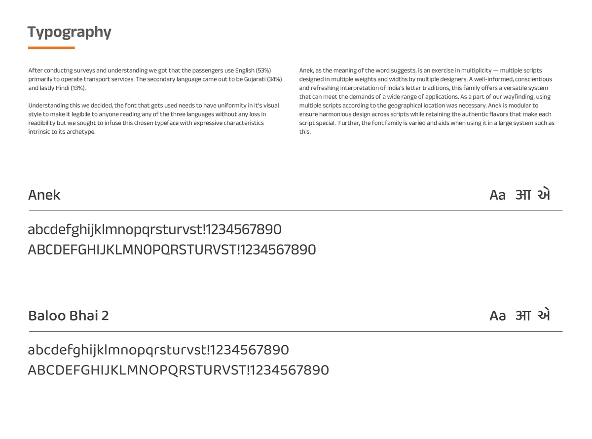
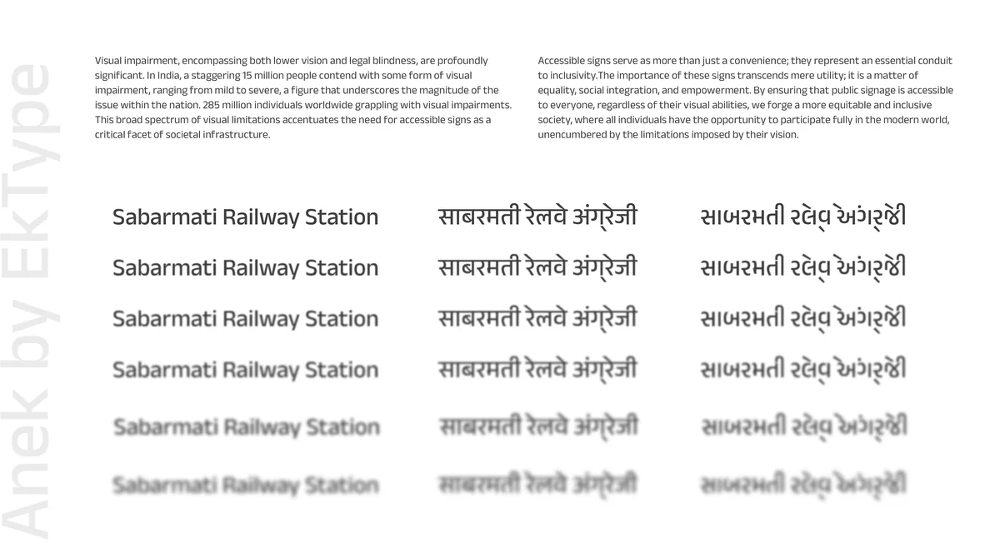
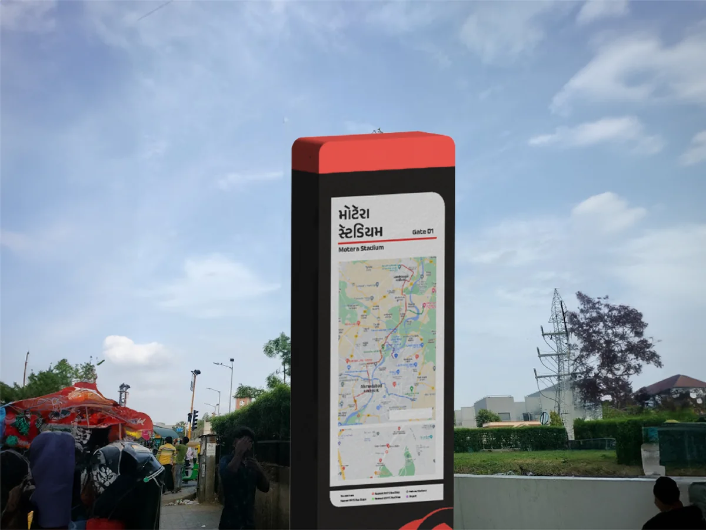
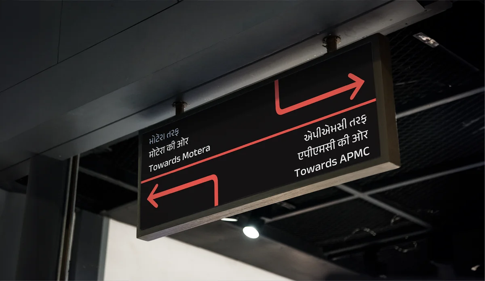

Ahmedabad Metro by GMRC Limited aims to revolutionize urban transportation. Following extensive studies and site visits, challenges were pinpointed in the wayfinding and ticketing systems. The focus of this project was on enhancing the wayfinding experience through improved visual design, strategic signage placement, and orientation, aiming to minimize user anxiety and streamline navigation.
Signage is graphic communications in the built world, which conveys information from one entity (the external environment) to another (people) in a visual mode. It tells a story as they walk through that space.

Research began with site visits, footfall mapping, shadow playing, and participatory action research. A comparative case study covered metro stations around the world and across India. User journey mapping broke the experience into three scopes: Access Scope, Transfer Scope, and Egress Scope.
Surveys indicated that English (53%) is the predominant language among metro riders, followed by Gujarati (34%) and Hindi (13%). This multilingual reality drove every typographic and layout decision that followed.

The typeface chosen was Anek Sans, selected for its native support of Devanagari and Gujarati scripts alongside Latin. Contrast values followed Arthur and Passini's research, targeting 70% contrast for legibility. Letter body width-to-height ratio was maintained between 0.6 and 1.0 across all signage.
A color coding system was developed to distinguish sign types. Signage was classified into three categories: Guidance Signs (directional), Normative Signs (regulatory), and Indication Signs (informational).

Physical sign dimensions were specified for each placement context: A1 (2x10ft), A2 (2x4ft), A3 (2x6ft), B1 (0.5x1ft), B3 (2x12ft), C1 (2x2ft), C2, and D2 (12x8ft). Each size was mapped to a specific location within the station architecture.





Chaitanya Singh, Student, 20s, Delhi. Frustrations: less information available online, no designated app, doesn't like standing in queues, doesn't want to carry two different metro cards.
"I always keep getting lost and get anxious while using the metro! It needs a redesign!"Anonymous User
The redesigned signage system was tested with metro officials and commuters. Accessibility was validated for Tritanopia, Protanopia, and Deuteranopia color blindness conditions. The system achieved an 88% H Value and met 6:1 WCAG grading for contrast compliance.
"This new signage works a lot better than the current ones at the stations."Metro Official


Shreyo Debnath · Designer